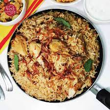

Chicken Pulao

Description
A popular Pakistani dish served mainly during celebrations!
An amalgamation of spices, fragrant rice and chicken paired with yoghurt to get the best of flavours.
With delicious tender chicken and Basmati rice, it's a dish hard to mess up!
This recipe serves 4 people.
Ingredients for chicken marinate
-
800 grams chicken
-
2 tbsp ginger garlic paste
-
1 tbsp Kashmiri red chilli
-
1 tsp turmeric
-
2 tsp salt
-
2 tsp garam masala
-
1 cup plain yoghurt
-
2 tsp MSG (optional)
Ingredients for the rice
-
3 cups soaked rice (preferably overnight)
-
2 sliced onions
-
1 diced tomato
-
1/2 cup mint leaves
-
3 to 4 chopped green chillis
-
3 tsp ginger garlic paste
-
2 bay leaf
-
2 star anise
-
1 tsp cumin seeds
-
5 to 6 cloves
-
2 2-inch cinnamon pieces
-
8 cardamom pods
Garnish (optional)
-
Handful of chopped coriander
-
Mix 3 tbsp milk with red/yellow food colouring
-
Fried onions
-
3 tbsp butter
-
1 tsp rose water
Steps
-
Marinate the chicken for at least 30 mins using the ingredients mentioned.
-
Fry the onions until caramalized (a teaspoon of sugar helps with the colour and taste) and set some aside for garnish.
-
Slow the burner and add in the ginger garlic paste (Be careful! It'll pop for a few minutes).
-
Put in all the spices.
-
Let it cook until fragrant.
-
Slowly add the chicken.
-
Add in the tomatoes and cook until its soft.
-
Add the chillies.
-
Add the mint leaves and cook until fragrant.
-
Cook until the oil seperates.
-
Gradually add the soaked rice.
-
Add in 8 cups of water, or until its completely drowned the rice (Be careful at this part as too much water turns the rice too soggy and too less can burn it. Use your intuition!)
-
Simmer until the water bubbles.
-
Put your cooker at its lowest flame possible, and let the rice cook until tender.
-
Garnish the rice!
-
Wait until pot releases steam, and then turn off your burner.
-
Let it rest for 30 minutes. Serve and enjoy! with a good dollop of yoghurt at the side!